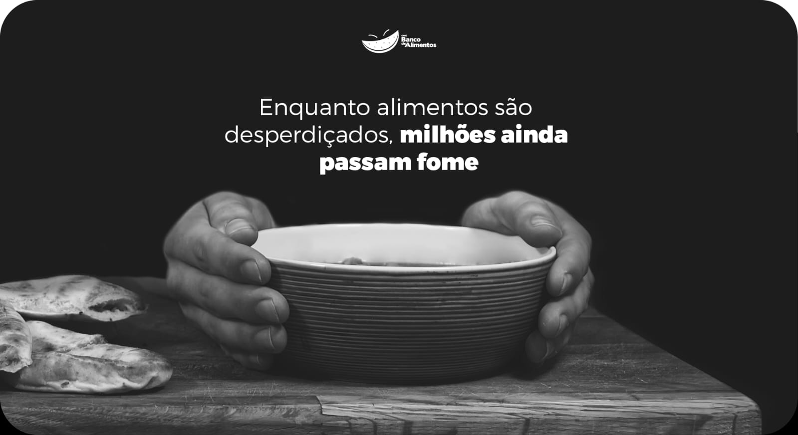
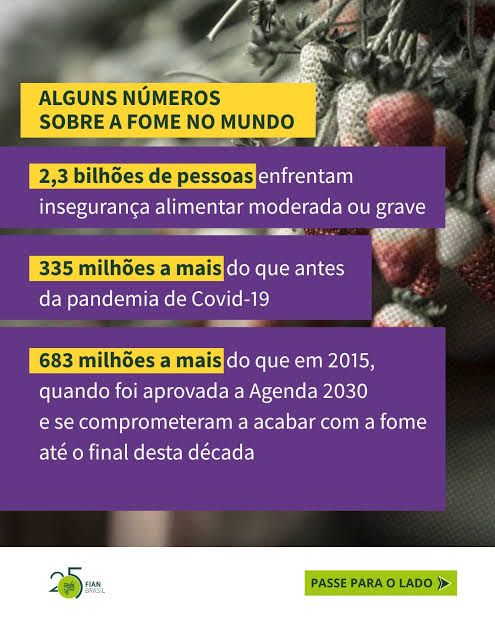
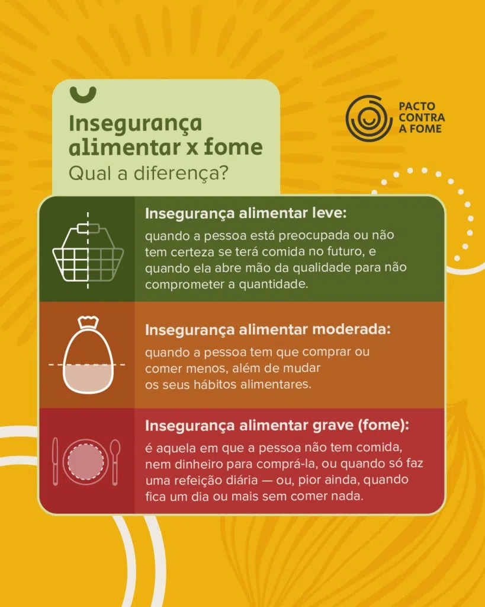
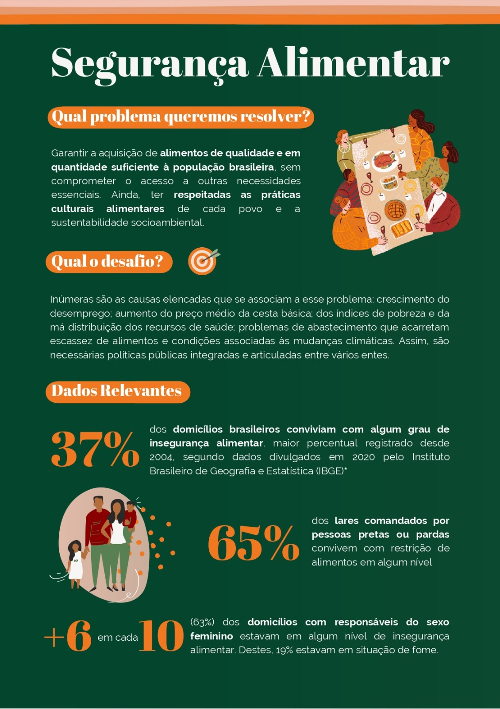
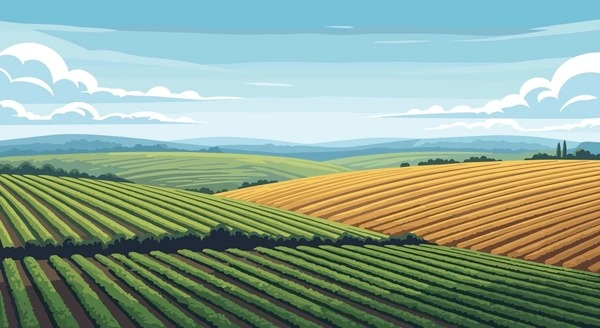
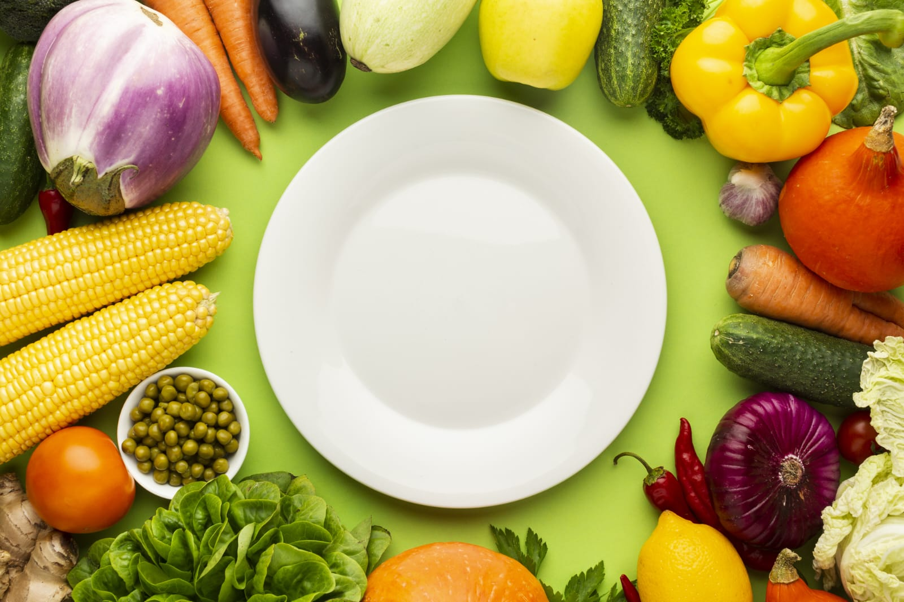
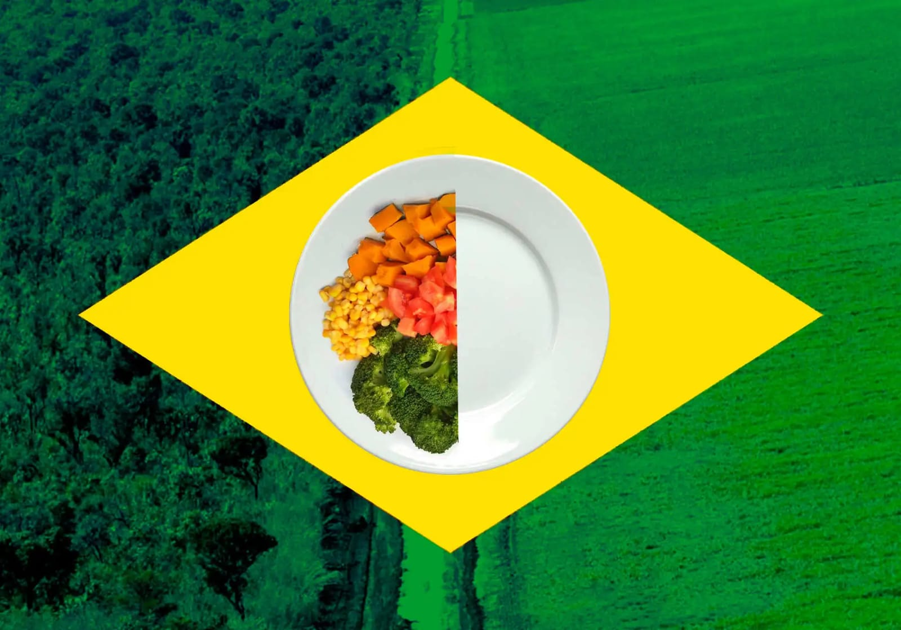
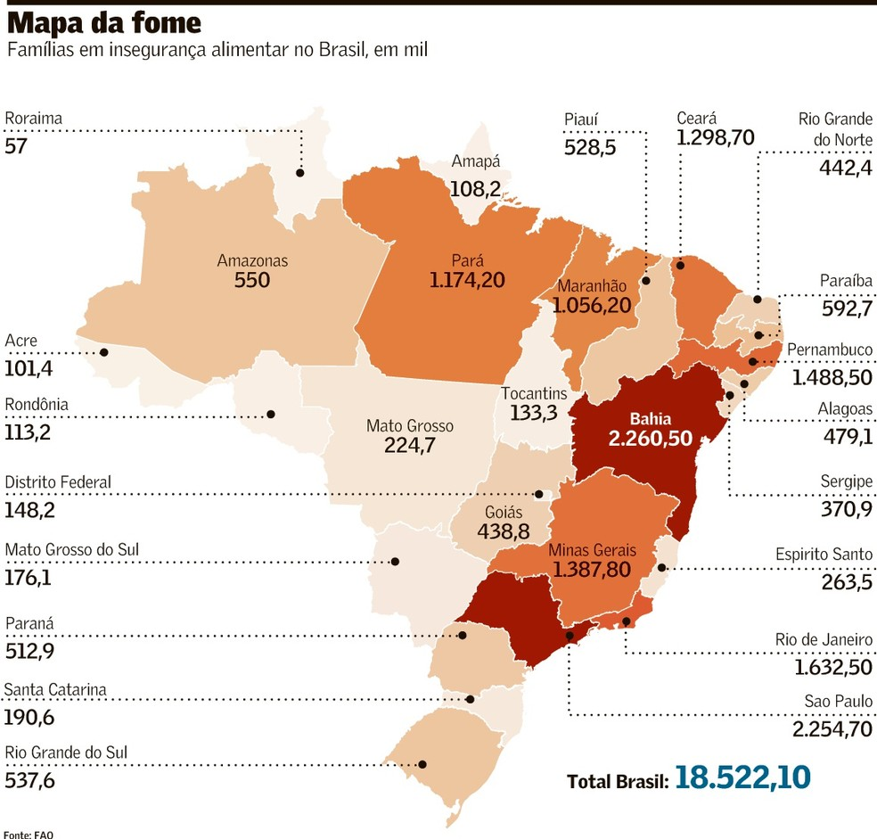
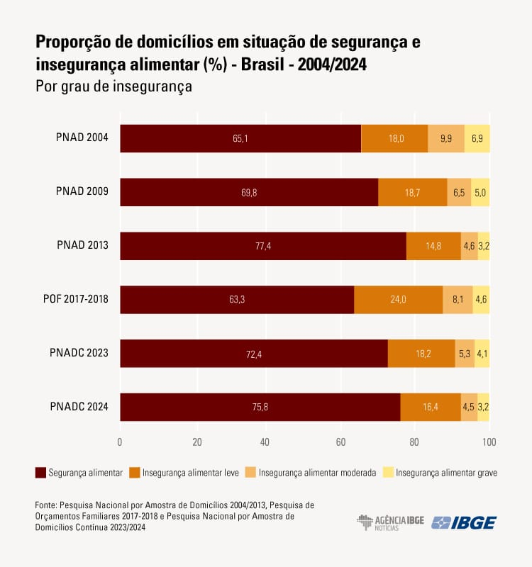

Nesta página apresentamos imagens que ajudam a compreender a realidade da fome e da insegurança alimentar no Brasil e no mundo.
Imagens sobre a Fome e Segurança Alimentar









Vídeo Educativo
Assista ao vídeo para compreender melhor a realidade da fome e da segurança alimentar no Brasil.
Fonte do vídeo: Canal YouTube — Assistir no YouTube
Conteúdo em Áudio
Para entender melhor as diferentes faces dessa realidade no Brasil e no mundo, existem conteúdos em áudio disponíveis nas principais plataformas.
Instituto Fome Zero: Acesse a página do Podcast IFZ para ouvir discussões sobre governança, acesso à terra, Josué de Castro e desafios globais da alimentação.
Áudio Complementar
Áudio complementar sobre segurança alimentar e combate à fome, utilizado para fins educativos neste projeto.
Fonte do áudio: Radioagência Nacional — reportagem sobre o avanço da segurança alimentar no Brasil, apresentando dados recentes do IBGE sobre o acesso regular aos alimentos.
Fontes
- Banco de Alimentos
- FIAN Brasil
- Pacto Contra a Fome
- Ação da Cidadania
- FAO Brasil
- Rede PENSSAN
- IBGE